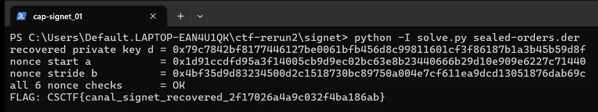

01Start point: the handout, sealed-orders.der and case-note.txt
- What I did: read case-note.txt, which documents the DER layout of sealed-orders.der and the signer's fault.
- What I found: the bundle holds six SignedOrder records (seq 0..5, each the exact message plus an ECDSA r, s) and one SealedOrder (salt, nonce, ciphertext, tag). The note pins down the math:
- curve secp256k1, hash SHA-256, z_i = int_be(SHA-256(message_i)) mod n
- seal key = HKDF-SHA256(IKM = d as 32 big-endian bytes, salt = seal.salt, info = "CSCTF26/TheSignet/v1/standing-order", L = 32)
- seal cipher = AES-256-GCM with seal.nonce, seal.tag and empty AAD
- Thinking: the note says each nonce was the previous one plus "the same additive stride modulo the curve order". So the nonces are k_i = a + i*b (mod n) with an unknown start a and stride b. That is a linear relation, so I never have to guess a or b.
02Pivot: each signature is a linear equation in d
- What I did: rewrote each signature in terms of the three unknowns d, a and b (all mod n):
- s_i = k_i^-1 (z_i + r_i d), so k_i = A_i d + B_i with A_i = s_i^-1 r_i and B_i = s_i^-1 z_i
- setting that equal to a + i*b gives A_i d - a - i*b = -B_i (mod n)
- Result: Gaussian elimination modulo n on records 0, 1 and 2 (each division a modular inverse) gives the private key d = 0x79c7842bf8177446127be0061bfb456d8c99811601cf3f86187b1a3b45b59d8f.
- Thinking: three equations fix three unknowns, which leaves records 3 to 5 as free checks. Recomputing each nonce as s_i^-1 (z_i + r_i d) for all six records gave a + i*b (mod n) every time, so the stride model is the true one and not a coincidence.
03Flag: opening the seal with HKDF and AES-GCM
- What I did: derived the seal key with HKDF-SHA256 from d as 32 big-endian bytes and the note's salt and info. With L = 32 that is a single expand block, HMAC(PRK, info || 0x01). Then I decrypted seal.ciphertext with AES-256-GCM using seal.nonce, seal.tag and empty AAD.
- Result: CSCTF{canal_signet_recovered_2f17026a4a9c032f4ba186ab}
- Thinking: GCM only accepts the tag under the right key, so a clean decrypt is one more proof that d is right.
